CarND-Advanced-Lane-Lines
Advanced Lane Finding Project
Scripts:
calib.py - Scxript to display and save camera calibrationdetect.py - script to display and save detection pipeline
The goals / steps of this project are the following:
- Compute the camera calibration matrix and distortion coefficients given a set of chessboard images.
- Apply a distortion correction to raw images.
- Use color transforms, gradients, etc., to create a thresholded binary image.
- Apply a perspective transform to rectify binary image ("birds-eye view").
- Detect lane pixels and fit to find the lane boundary.
- Determine the curvature of the lane and vehicle position with respect to center.
- Warp the detected lane boundaries back onto the original image.
- Output visual display of the lane boundaries and numerical estimation of lane curvature and vehicle position.
Camera Calibration
1. Camera calibration is done in utils/calibrate.py. Script loads every image that match following pattern: camera_cal/*.jpg.
Termination criteria are defined as follows.
criteria = (cv2.TERM_CRITERIA_EPS + cv2.TERM_CRITERIA_MAX_ITER, 30, 0.001)
Here I am assuming the chessboard is fixed on the (6, 9) plane at z=0, such that the object points are the same for each calibration image. Here I use 3D reference coordinates and arrays to store data (calibrate.py:11).
objp = np.zeros((6*9,3), np.float32)
Then I iterate through all the images saved in camera_cal/*.jpg and try to find chess board on each. If found, I add points to each array and display. An image for reference to generate output.
 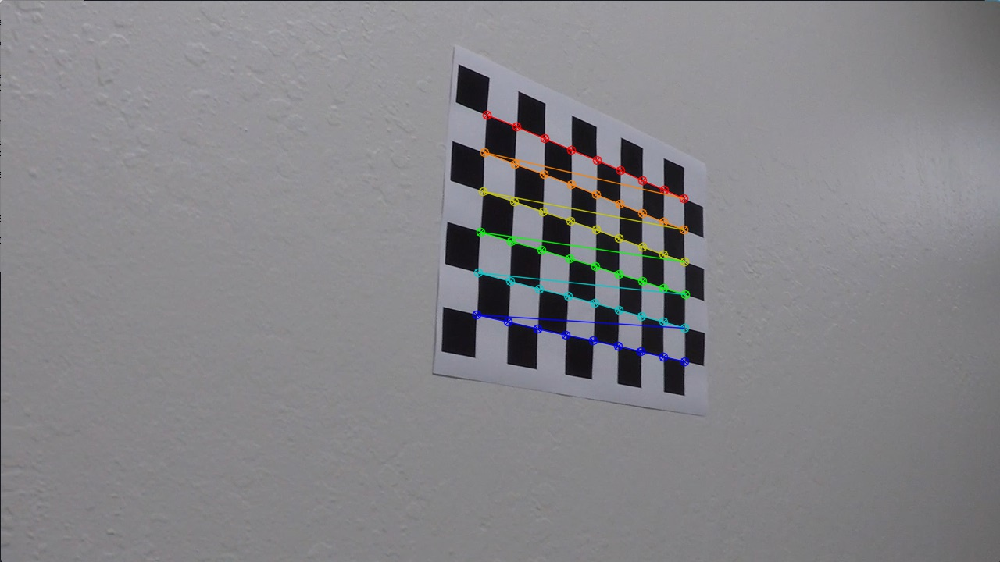
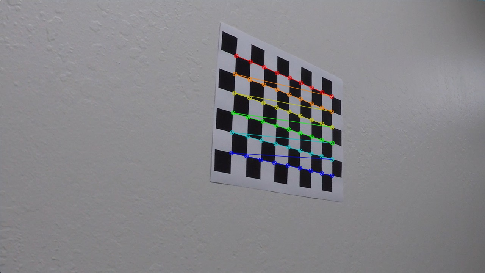
Then we distort all windows and do actual calibration: (calibrate.py:40).
cv2.destroyAllWindows()
After that, this data is dumped into a JSON format for the next script (calibrate.py:51).
Pipeline (single images)
Pipeline is done in utils/detect.py. Script loads every image that match following pattern: test_images/*.jpg and then loads project_video.mp4.
The pipeline for images or first frame of video is following (utils/detect.py:348):
- undistortion.
- perspective transform
- binarization
- line fitting
- calculate curvature and position
1. Distortion correction
Distortion is corrected using OpenCV cv2.undistort function (utils/detect.py:352) with provided camera calibration data (utils/detect.py:12). Images before and after distortion correction are shown below
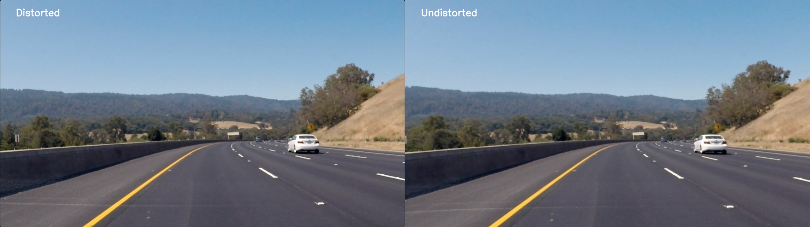
2. Perspective transform
Perspective transform is done using cv2.getPerspectiveTransform and cv2.warpPerspective (utils/detect.py:229 - 230). Input points are defined as follows: (top left = 0,0, bottom right = 1,1)
- 0.16, 1
- 0.45, 0.63
- 0.55, 0.63
- 0.84, 1
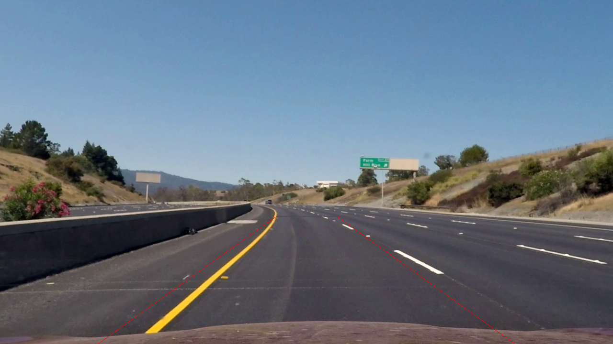
4 points used to compute transformation matrix.
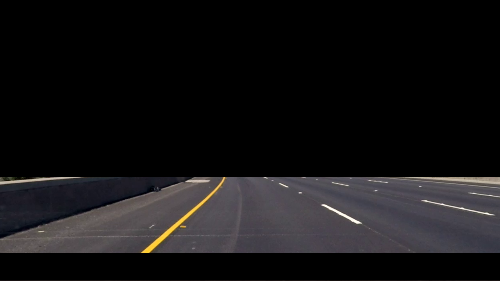
Images are masked above 0.63 and 10% from bottom (utils/detect.py:233).
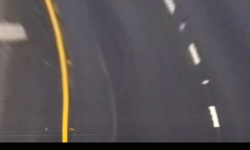.
Image transformed to top view using warp perspective (utils/detect.py:337).
3. Binarization (utils/detect.py:30)
Binarization is done in following steps:
- Blur with 5x5 kernel using
cv2.filter2D (utils/detect.py:38).
- Equalize histogram (utils/detect.py:40)
- Convert to YUV colorspace (utils/detect.py:41)
- Use cv2.equalizeHist with Y channel (utils/detect.py:42)
- Convert back to RGB (utils/detect.py:43)
- Find white lines
- Leave only G channel
- Black all values below 250 and set rest to 255 (utils/detect.py:48)
- Find yellow lines
- Use V from YUV
- Blur with 5x5
- Apply sobel in x and threshold (utils/detect.py:56-57)
- Merge results from 3 and 4 (utils/detect.py:60)
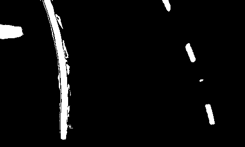.
4. Line fitting (utils/detect.py:63)
Line fitting for single image or first frame of video works as follows:
- Set center = width/2.
- For each line in image starting from bottom:
- Store index of each none zero point in xvalhist
- Store in xvalhist index of each none zero point from row
- If len of xvalhist is greater than 0:
- Group points to left/right line according to position to center
- If there are points in left group:
- Add point to points
- Set center = average + width*0.2
- If there are points in left group:
- Compute mean
- Add point to points
Image below shows red, green and blue dots. Red and blue are points for left and right line fitting respectively. Green is the position of center which discriminates left from right points.
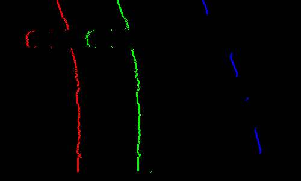
5. Line fitting for a video frame (utils/detect.py:170):
- For every 10th row of frame starting from bottom:
- Compute min, max of ROI for x, for left and right lines to search for points (lxmin, lxmax, rxmin, rxmax)
- Store in xvalhist index of each none zero point from row
- If len of xvalhist is greater than 5:
- Group points to left/right line according to position to lxmin, lxmax and rxmin, rxmax
- If there are points in left group:
- Compute average
- Add point to points
- Set center = average + width*0.2
- If there are points in left group:
- Add point to points
- If there are less than 10 points in left or right line 25 times, single image line fitting is made.
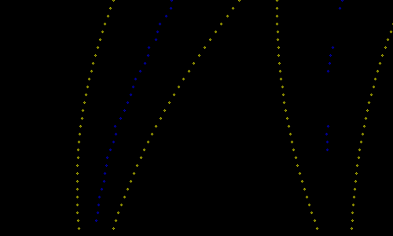
5. Calculating radius / curvature and position (utils/detect.py:244)
All radius/position related computations are made in computeAndShow method . Curvature is computed using code from Udacity. Position is obtained by computing the difference between center of image and center of lane in pixels. Then it is converted to meters using pixels to meters factor for x axis.
6. Results
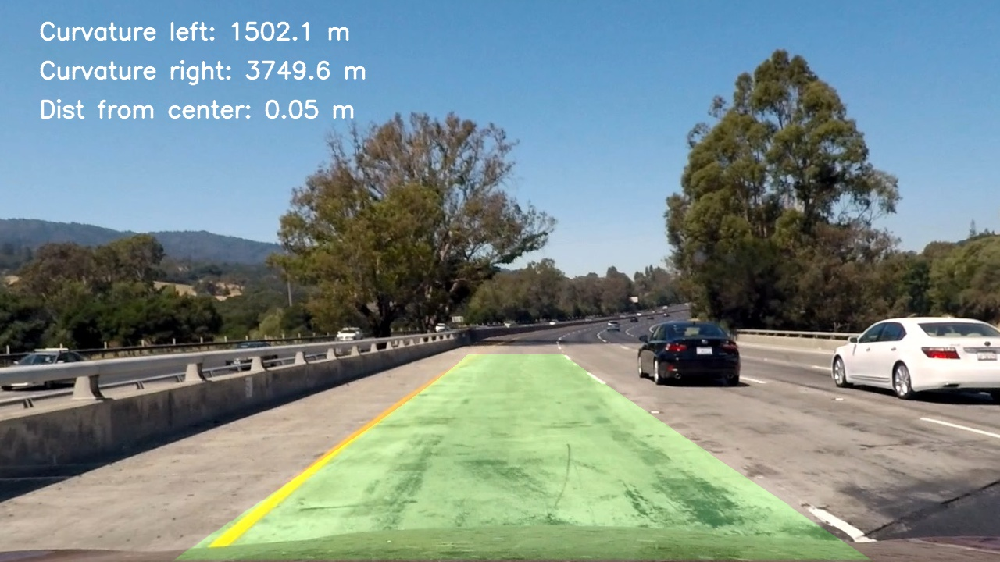
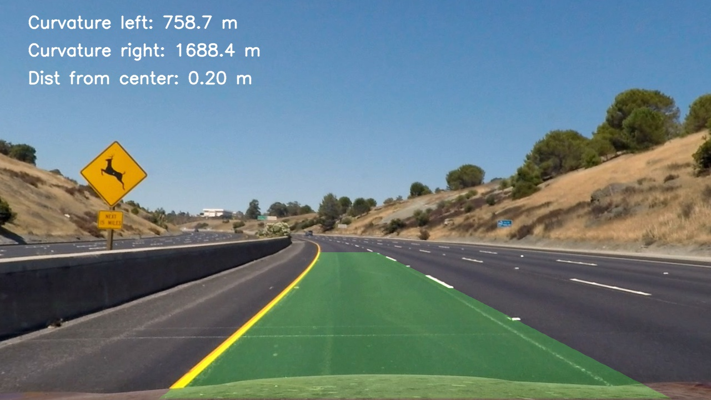
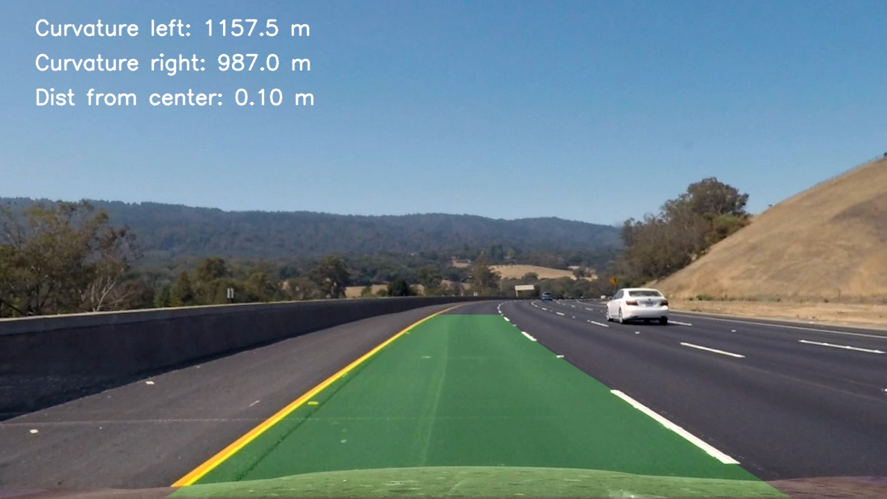
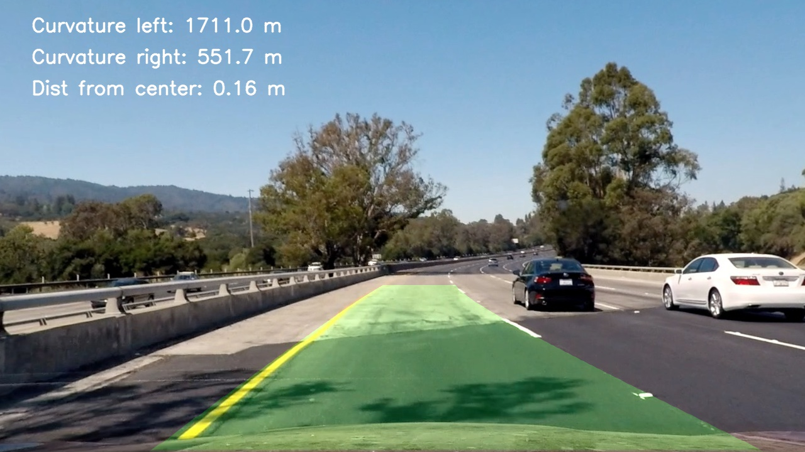
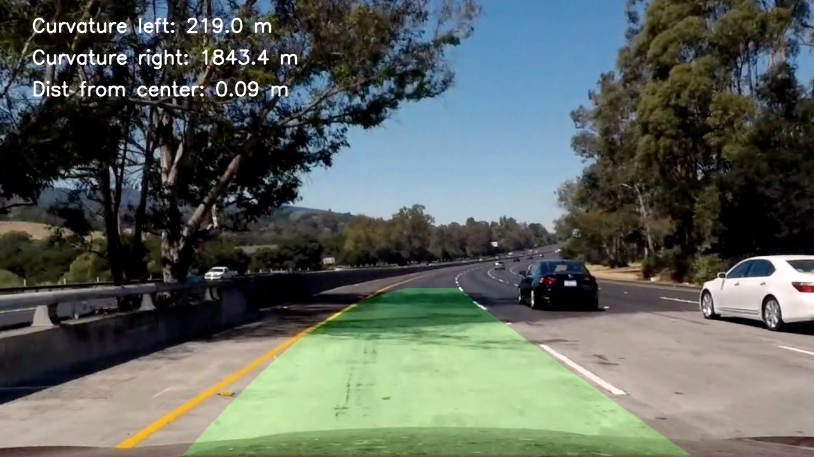
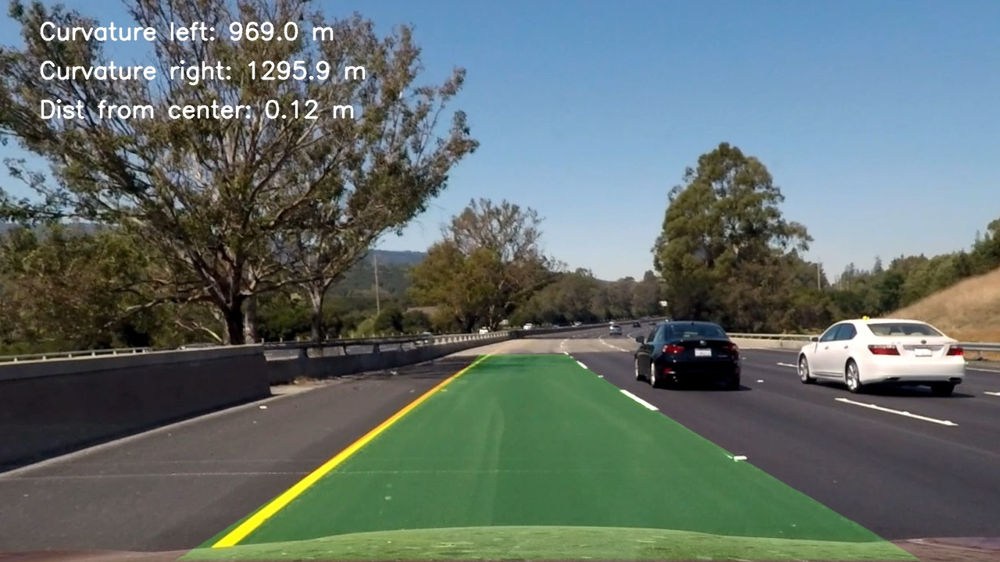
Pipeline (video)
project_video.mp4 is available in output_images directory.
Discussion
1. This solution works good on the project_video example, but was not able to perform well on challenge and harder_challenge.
We can improve the detection by:
- Fine tunning of binarization
- Support for small radius turns - larger ROI